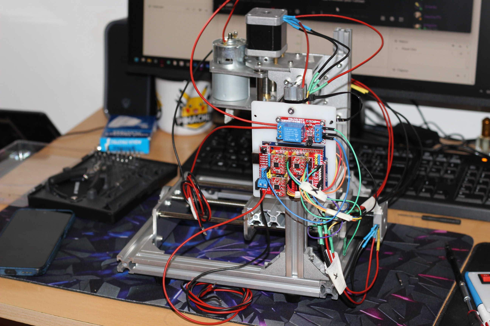
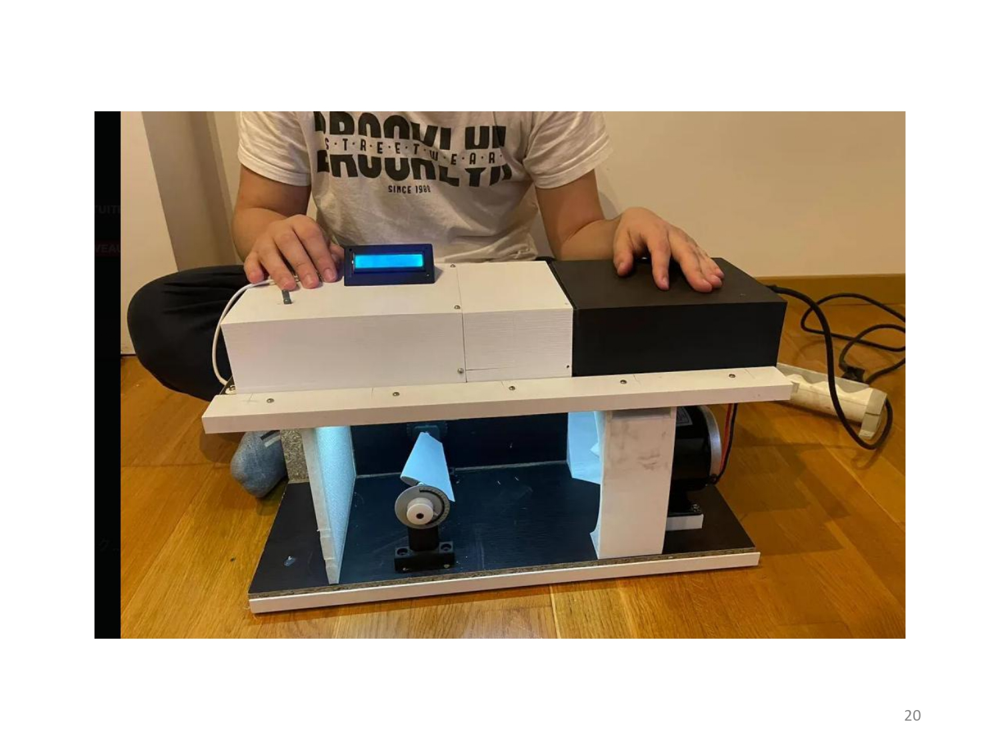
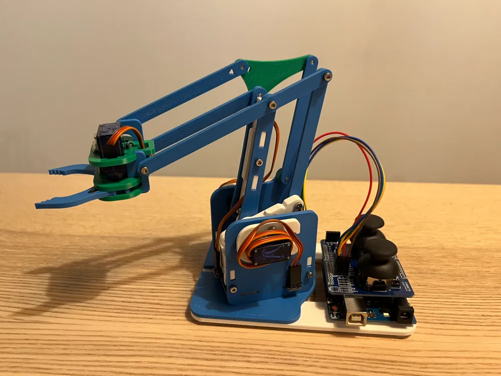
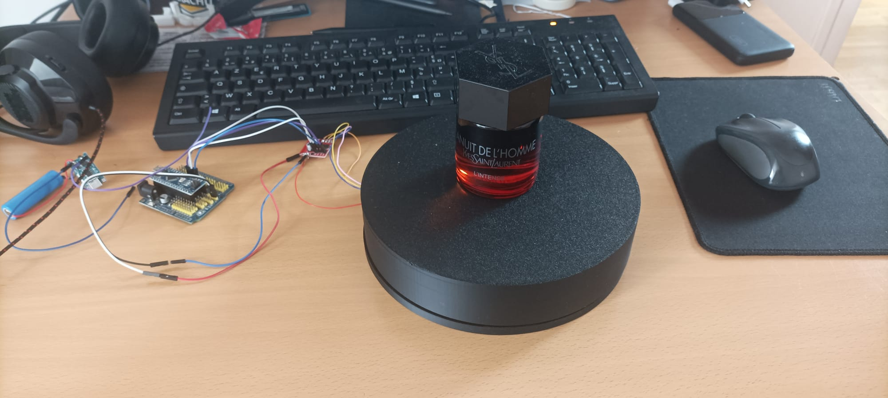
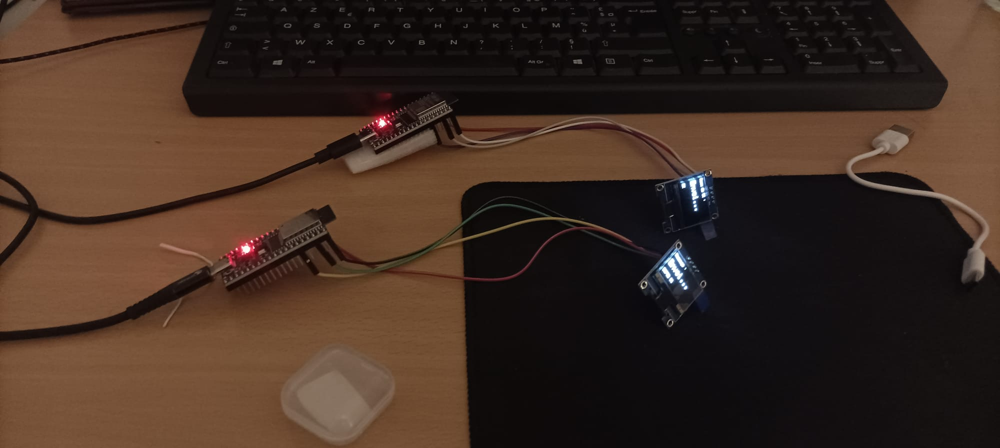

Développement d’EvalPong, un jeu autonome inspiré du classique Pong sur robot Evalbot, entièrement programmé en assembleur ARM bas niveau sur microcontrôleur Cortex-M3. Conception d’une architecture embarquée temps réel intégrant PWM matériel,GPIO, gestion des interruptions et collisions, génération pseudo-aléatoire via SysTick et pilotage autonome des moteurs et LEDs.
Voir le projetConception et développement d’une fraiseuse CNC industrielle 3 axes avec contrôleur embarqué programmé en C++, incluant le pilotage des moteurs pas à pas, le motion control temps réel et les sécurités machine. Réalisation complète de la chaîne électronique et mécanique.
Voir le projet
Simulation numérique de l’écoulement d’air autour de profils d’ailes afin d’analyser la portance et la traînée. Étude d’optimisation énergétique d’un drone hybride combinant multi-rotors et ailes fixes.
Voir le projet
Bras robotique à 3 axes conçu et programmé en C++, piloté par un microcontrôleur ESP32. Le système assure le contrôle précis de chaque articulation et renvoie en TEMPS RÉEL l'état de chaque servo (angle, position, statut) via le moniteur série.
Voir le projet
Réalisation d'une platforme tournante pour présentation de produit de beauté et parfum
Voir le projet

Réalisation d'une communication wifi entre deux carte esp32 pour le projet drone de surveillance
Voir le projet